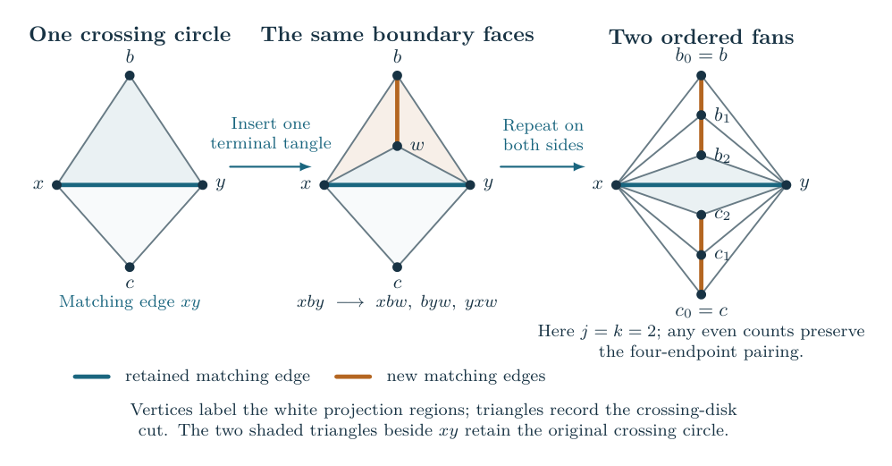

Murakami’s Dream
The results are being rewritten as papers organized by subject, each at most 30 pages. The existing reference manuscript remains available with its complete dependencies. This guide explains the results, their methods and the approaches that remain unfinished.
The question and the knots under consideration
For a knot and an integer , Kashaev’s invariant is a complex number obtained by evaluating a finite sum at a root of unity. We use the reduced normalization, in which the unknot has value one. If the knot complement admits a complete hyperbolic metric of finite volume, the volume conjecture predicts that
The left side measures exponential growth: a value of the form has limit , because the polynomial factor disappears after taking the logarithm and dividing by . The right side is the volume of the knot complement. The knot remains removed from the three-sphere.
This project studies the conjecture by cutting knot diagrams into tangles and keeping their finite evaluations and geometric face identifications together. One construction starts from a planar diagram encoded by a simple triangulation of the sphere. Other results treat Conway algebraic, or arborescent, knots, built by joining and turning rational tangles. The planar construction gives broad families after a specified finite decoration; the tree results also give explicit degree and twist bounds.
The manuscript contains completed proofs with their exact scope. This guide also explains the research approaches that have not yet produced a general theorem. Start with the knot diagram and its finite evaluation for the definitions of tangles, filling, colors, and shared coefficients. Then methods and approaches explains Fourier energy, weighted Cauchy, angle optimization, quantum recurrences, and torsors, with examples and literature references. The algebraic approaches work through Hilbert 90, Koszul gluing, rigidity, and covers, including the tests that these proposals have not yet passed. The notation chapter collects the symbols and normalizations.
A general planar construction
Choose a finite simple triangulation of the sphere, and pair adjacent triangles so that each triangle occurs once. The pairs specify crossing-circle tangles and their strand connections in the three-sphere. There is an explicit procedure that adds finitely many tangles on both sides of each original crossing circle. The numbers added are even, and the new pieces have odd crossing parity, so a chosen knot pairing is preserved.
For every resulting decorated diagram, independently sufficiently long positive or negative twists at all original and added regions give the volume equality above. No tree decomposition of the tangle operations is required. The added tangles generally change the knot; the theorem does not remove them from its conclusion.
The construction and proof explain how a common circle packing determines the decoration and how its inequalities bound the full finite invariant. The geometric part constructs the smooth fillings of the auxiliary cusps while leaving the main knot cusp complete.


A criterion requiring no added tangles
The weak-balance theorem applies directly to a matched spherical diagram when its complete packing satisfies explicit non-strict inequalities at every crossing region. If the original strand connections give one knot with no extra closed main component, independently long signed twists give the full volume equality. The proof changes the coefficient radii by a small common power: its entropy gain is linear in the perturbation, while the cost to the stationary complete action is quadratic. The condition is not asserted for every diagram. The linked explanation defines the potential, entropies, and precise inequality before deriving the estimate.
The ordered-tree constructions
For the specified construction with an integer braid at every vertex of an ordered tree with at least one edge, a single twist threshold works for every finite tree: The integer counts signed half-twists. The actual endpoint pairing must form one knot, with no additional closed component. The threshold is independent of the size, depth and degrees of the tree. A more flexible sufficient condition lets each vertex have either this twist magnitude or degree . The entire diagram is still fixed before the quantum level grows.
Stacking and turning the tree pieces
A two-string tangle consists of two arcs in a ball, with four specified endpoints on its boundary. Draw the ball as a rectangle with two endpoints at the top and two at the bottom. There are two operations. To stack two tangles, put one above the other and join the adjacent pairs of endpoints without adding crossings. To turn a tangle, rotate its entire diagram through a quarter-turn. The order of the pieces matters.
Start with an elementary box containing two strands with an integer number of half twists, and turn that box through a quarter-turn. Make finitely many such pieces, each with its own integer twist number. Repeated stacking and turning gives larger tangles. Finally, stack two such tangles and close the diagram by connecting the bottom-left endpoint to the top-left endpoint outside the box, and likewise on the right. This is the cylindrical closure used here. To decide whether the result is a knot, follow all strand connections and count any circles already closed inside intermediate boxes as well as those formed by the final closure.
The construction can have arbitrarily many pieces and arbitrarily deep nesting. It is recorded by a finite ordered tree: its leaves are the elementary twist pieces, and its internal operations are stacking and turning. A tree in this description records a construction; it is not a drawing of the knot.
The manuscript guide gives drawings, worked examples, and the precise recursive class treated in the paper. The results chapter also explains the larger class covered by the companion theorem.
The volume theorem and its quantifiers
The net-twist theorem first simplifies the actual tangle diagram. Integral twist boxes that can be brought together are combined by adding their signed twist numbers. Moving a twist box past a tangle carries a specified half-turn of that tangle, which the reduction retains. The result is either an elementary two-strand braid closure or a presentation passing the strict angle-feasibility test described in the results chapter.
For each fixed input construction , the reduction partitions the original pieces into disjoint groups . Their surviving twist numbers are
The groups are determined before the integer weights are chosen. The order of some surviving pieces can depend on their parities. There is a finite threshold such that, on a non-elementary output, the conditions
and the requirement that the actual closed link be a knot imply hyperbolicity and
The elementary output is the closure of a single two-strand braid, hence a torus link or knot; it is excluded from this positive-volume theorem. On a strict output the different net twists may have independent signs and incomparable magnitudes. Original weights within one group can cancel, so their individual largeness does not suffice. For example, two boxes with weights and combine to the fixed weight , however large becomes.
Choose the entire construction and all twist integers first; then let grow through the positive integers. The threshold may depend on the construction, but is uniform over its finitely many parity choices. Neither the tree nor its weights grow with .
This covers arbitrarily large fixed compositions when their reduced twists satisfy the bound. It does not cover arbitrary short twists or classify every arborescent knot up to all possible presentation changes. The earlier chapters of the TeX manuscript prove an included family; the companion strict-tree estimates and exact tangle reduction give this extension. A further manuscript chapter proves the quantitative circle-tree result below. The manuscript page distinguishes those scopes.
The closure extension also permits cap closures, which join each upper and lower endpoint pair, and twist sums that vanish exactly. Removing these zero sums can split the diagram into connected-sum factors. If the input is hyperbolic and every surviving strict factor has long net twists, the proof shows that just one strict factor remains and all others are unknots. The original knot is isotopic to that covered factor. The results chapter gives the precise criterion, including a sufficient condition on the original subset sums.
Numerical conditions for trees of crossing circles
In this construction every product junction contains an integer two-strand braid. To describe its geometry, place a crossing circle around that braid and retain its parity as a half twist. Let be the number of incident tree edges and its signed crossing power. The directed subtree theorem proves the actual hyperbolic knot-volume equality when, independently at each vertex, and the original strand pairing gives one knot. Its more detailed finite criterion assigns a separate decay bound to each subtree; the displayed condition is a simple consequence of that criterion.
The degree alternative allows short and zero powers. For example, start with any fixed ordered core whose strand pairing is a knot. At an existing product slot at each vertex, insert an even stack of new terminal pieces, each with an odd power of magnitude at least . The stack has the same endpoint pairing as two straight strands and creates no internal circle. The resulting knot satisfies the theorem. This is a way to construct new covered knots; it generally changes the knot represented by the original core.
The summed criterion gives a different sufficient test: For a tree with edges, every suffices. This can be numerically better for a particular diagram. The earlier local condition is also retained in its original note. All these theorems keep the tree and the twist integers fixed while grows through both parities.
Both the finite-sum estimate and its geometric interpretation are proved. The original octahedral pieces deform with their marked filling curves, and the final metric is smooth on the original knot complement. The main knot cusp remains unfilled. The results chapter gives the exact scope and the manuscript guide locates the full proofs.
Why the proof has both an analytic and a geometric part
After the exact tangle reduction, the analytic and geometric proof begins by removing the surviving long twists and placing an auxiliary circle around the two strands in each twist region. The resulting augmented link remembers where the twists will be restored. Assigning integer labels, called colors, to these auxiliary circles produces a finite evaluation depending on those labels. The notes call this evaluation the source.
At each level , the source is an exact finite sum. Its leading exponential growth is described by a real function of the summation indices divided by . Maximizing that function produces angles for ideal hyperbolic cells. The geometric part of the proof shows that these cells fit together with precisely the face identifications of the augmented link complement. This establishes which manifold supplies the volume.
Restoring the twists requires another finite sum over the auxiliary colors. Its terms have complex phases, so their absolute values alone do not determine its growth. The analytic part proves a nonzero leading contribution and bounds the rest of this whole sum. It also follows the chosen geometric structure through the fillings that restore the twists.
Filling an auxiliary crossing circle means removing that auxiliary cusp by attaching a solid torus with the specified slope. The cusp belonging to the knot is left unfilled. Consequently the final critical value is the volume of the resulting knot complement, rather than the volume of the augmented link used at the beginning.


The mechanism chapter develops the finite sum and its estimates. The geometry chapter explains the ideal cells, peripheral curves, and the volume comparison. These two parts are both needed: constructing a hyperbolic metric does not by itself estimate the quantum invariant, and estimating a finite sum does not by itself identify its exponential rate with the volume of a particular complement.
The quantum A-polynomial formulation
There is also a recurrence formulation. A quantum A-operator is a finite difference operator annihilating the color-dependent invariant. Its coefficients depend on the quantum parameter and a peripheral variable; a shift changes the color. An operator alone generally has more than one solution. Initial values and the prescribed behavior at singular specializations select the solution corresponding to the knot invariant.
The pointed quantum A-period theorem gives an exact reconstruction of from this operator and finite initial data, retaining the peripheral factors. For the knots covered above, this reconstructed value therefore has the same hyperbolic volume limit. The theorem also gives a positive determinant expression whose exponential rate is the volume.
For every covered strict long-filling presentation, the geometric longitude proof identifies the whole selected curve with the preferred meridian–longitude deformation of the knot complement. Junctions without crossing circles may have arbitrary valence and adjacency. The earlier summed circle-tree theorem and the local theorem with bound also have the required geometric identification and full expansion. The selected complex geometric irreducible factor therefore divides the first nonzero classical symbol of every genuine all-level annihilator of the reduced invariant. This does not identify the other factors, their multiplicities, or the full recurrence ideal.
The actual meridian state imposes a concrete constraint: its complete value has volume growth, but its value one quantum shift away is exactly one. The nearby-zero theorem proves that zeros approach completeness at distance . A nonvanishing scalar asymptotic for the unchanged state therefore cannot hold on a fixed neighborhood.
There is now a uniform volume limit on smaller disks , , for every fixed strict Conway tree with independently sufficiently long signed twists. Product junctions can have arbitrary fixed valence and adjacency. The ratio to the complete value tends to ; after division by the exact finite sine quotient, its first correction is determined by the preferred cusp shape. The moving-meridian theorem states the normalization, the threshold and the whole-sum comparison.
The same intrinsic volume, nonvanishing, cusp and selected-factor conclusions pass through the net-twist and closure reductions under their stated hypotheses. Their ambient isotopies preserve the entire zero-framed meridian family and the preferred peripheral curves. The comparison may use the reduced strict diagram to compute its factors; it does not identify the auxiliary augmented links of different presentations. The disk still stops before the ordinary-color resonances. Continuation through them and coverage of other knot classes remain further questions.
Reading and checking the arguments
Read the manuscript for a continuous account with definitions, proof details, and illustrations. Use the results chapter to compare the exact families and hypotheses, and the notation chapter when consulting technical notes. The reproduction chapter distinguishes the finite rational inequalities checked by the supplied programs from the analytic and geometric arguments proved in writing.
The research library organizes the supporting notes by question. It retains the Fourier, weighted Cauchy, torsor, cube, and other approaches, including estimates that failed and the explanations of their failure. Those historical routes are useful evidence about the problem; they are not additional prerequisites for reading the main theorem.
The figure gallery explains what each diagram represents and links to editable sources. The general volume conjecture remains open.